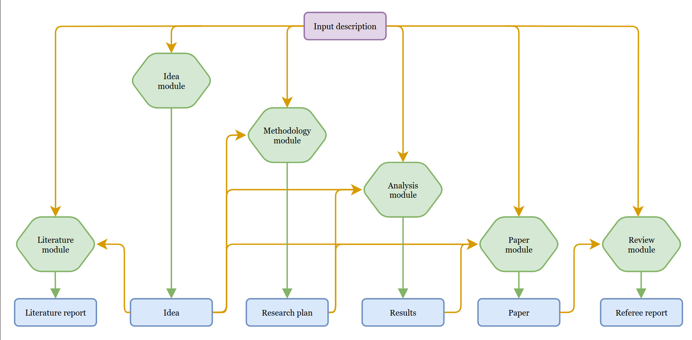
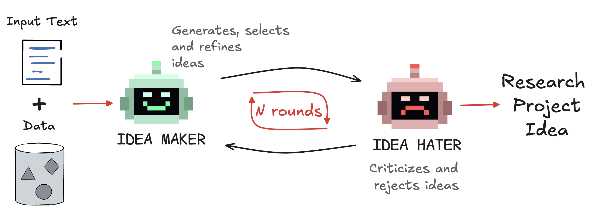
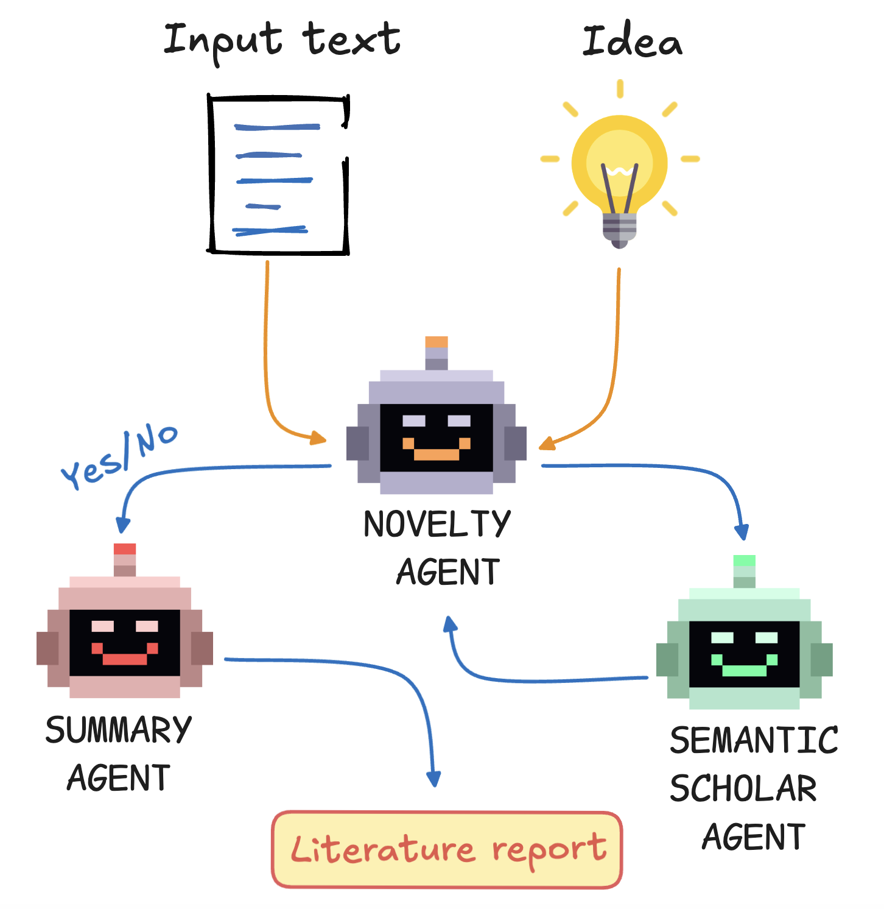
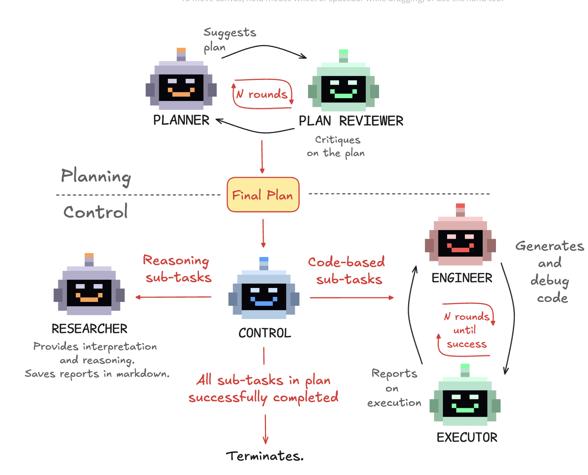
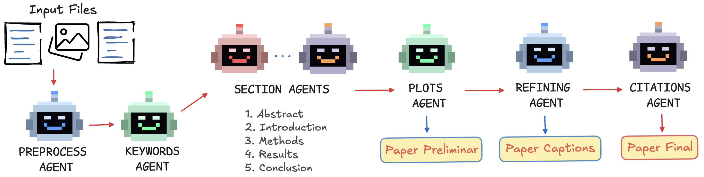
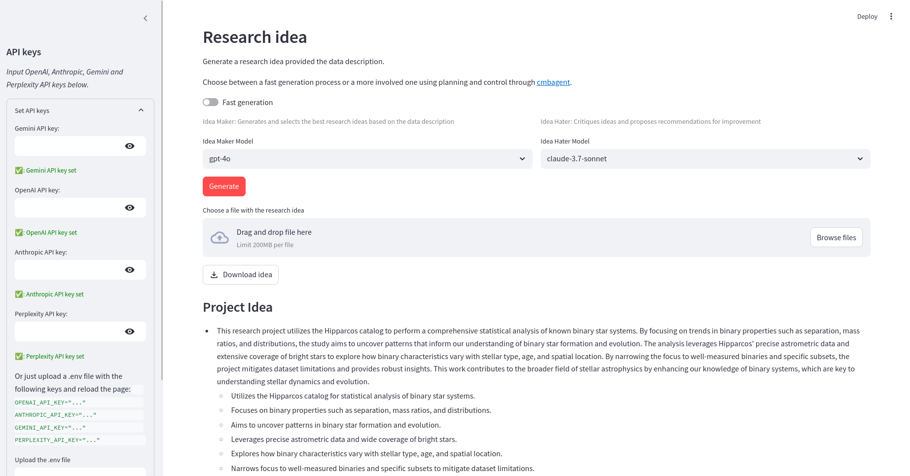

We present Denario, an AI multi-agent system designed to serve as a scientific research assistant. Denario can perform many different tasks, such as generating ideas, checking the literature, developing research plans, writing and executing code, making plots, and drafting and reviewing a scientific paper. The system has a modular architecture, allowing it to handle specific tasks, such as generating an idea, or carrying out end-to-end scientific analysis using cmbagent as a deep-research backend. In this work, we describe in detail Denario and its modules, and illustrate its capabilities by presenting multiple AI-generated papers generated by it in many different scientific disciplines such as astrophysics, biology, biophysics, biomedical informatics, chemistry, material science, mathematical physics, medicine, neuroscience and planetary science. Denario also excels at combining ideas from different disciplines, and we illustrate this by showing a paper that applies methods from quantum physics and machine learning to astrophysical data. We report the evaluations performed on these papers by domain experts, who provided both numerical scores and review-like feedback. We then highlight the strengths, weaknesses, and limitations of the current system. Finally, we discuss the ethical implications of AI-driven research and reflect on how such technology relates to the philosophy of science. We publicly release the code at Github. A Denario demo can also be run directly on the web at HugginFace Spaces, and the full app will be deployed on the cloud.






Here are some example papers generated by Denario in different scientific fields.
@software{Denario_2025,
author = {{Villanueva Domingo}, Pablo and {Villaescusa-Navarro}, Francisco and {Bolliet}, Boris},
title = {Denario: Modular Multi-Agent System for Scientific Research Assistance},
year = {2025},
url = {https://github.com/AstroPilot-AI/Denario},
note = {Available at https://github.com/AstroPilot-AI/Denario},
version = {latest}
}
@software{CMBAGENT_2025,
author = {Boris Bolliet},
title = {CMBAGENT: Open-Source Multi-Agent System for Science},
year = {2025},
url = {https://github.com/CMBAgents/cmbagent},
note = {Available at https://github.com/CMBAgents/cmbagent},
version = {latest}
}